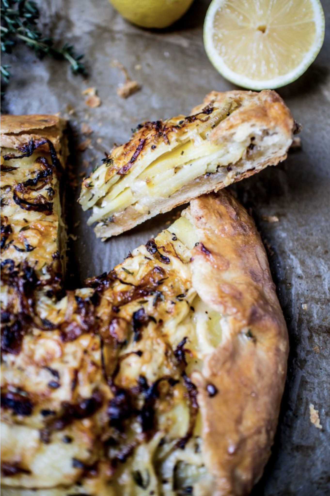

POTATO ASIAGO & CARAMELIZED ONION GALETTE
Ingredients
For the Dough:
- 1 stick (cold) unsalted butter
- 1 & 1/3 cups flour
- ¼ tsp salt
- ¼ cup grated Grana Padano or Parmesan
- 1/3 cups ice water (only add as much as needed)
For the Filling:
- White wine caramelized onions (recipe follows)
- 2 small (about 1 lb.) Yukon Gold potatoes sliced 1/8 inch thick/li>
- 3 Tbsp. butter with 1 Tbsp. cream (cream is optional)
- 1 ¼ cups grated Asiago
- 5 sprigs of thyme, leaves removed from stems
Zest from one small lemon
Directions
- Preheat the oven to 400o F.
Can be made ahead and refrigerated for a day or two
- Grate the butter into a small bowl and place in the freezer for about 8-10 min.
- In a large bowl mix flour, salt, and cheese.
- When the butter is nice and cold, mix into the flour with a pastry cutter (I 100% used my hands and just worked quickly so as not to melt the butter).
- When the mixture begins to clump together, slowly add water. Only add as much as needed to form a ball! Start with ¼ cup and increase as you mix. You don’t want a wet dough.
- On a floured surface shape ball into a disc and wrap tightly with plastic wrap. Refrigerate for an hour before using.
Meanwhile Make the Onions
- Heat 2 Tbsp. olive oil in a medium saucepan over medium heat.
- Add in onions and stir frequently so they can brown but not burn. Adjust the heat as necessary.
- After about 20 minutes add sugar and season with a bit of salt.
- Continue cooking and stirring until onions are a deep golden brown. This can take about 45 minutes but they could go for an hour. Just don’t wander away and leave them unattended, they can stick and burn.
- When the onions have acquired that nice deep golden tan, add in the sage and cook for about a minute, then add the wine and cook for about 2-3 minutes more, until the liquid has evaporated.
- Set aside to cool before assembling the galette.
Assemble the Galette
- Preheat oven to 400° F.
- Lay out a large sheet of parchment paper on your work surface.
- Remove dough from refrigerator and with a lightly floured rolling pin, roll out dough into a somewhat circle-shape (doesn’t need to be perfect) about 1/4 in. thick.
- Place about ½ of the onions in the center of the dough, followed by all of the garlic, and about ½ of the potato slices. Leave about a 1 ½ to 2 inch border between the filling and the edge of the dough.
- Lightly season with salt and pepper and top with ½ of the cheese and thyme.
- Drizzle with ½ of the butter mixture.
- Follow with the rest of the potatoes, more salt and pepper, the remaining onions*, cheese and thyme and lemon zest.
- Fold the edges of the dough over, brush with egg wash, and bake for about 45-50 minutes until golden brown.
- Let cool for about 5-10 minutes before serving.
View the original recipe online
Contact Me
Send me an email!
University of Montana
32 Campus Drive
Missoula, MT 59812